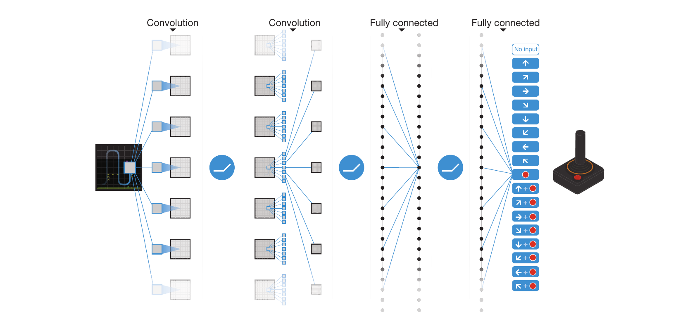
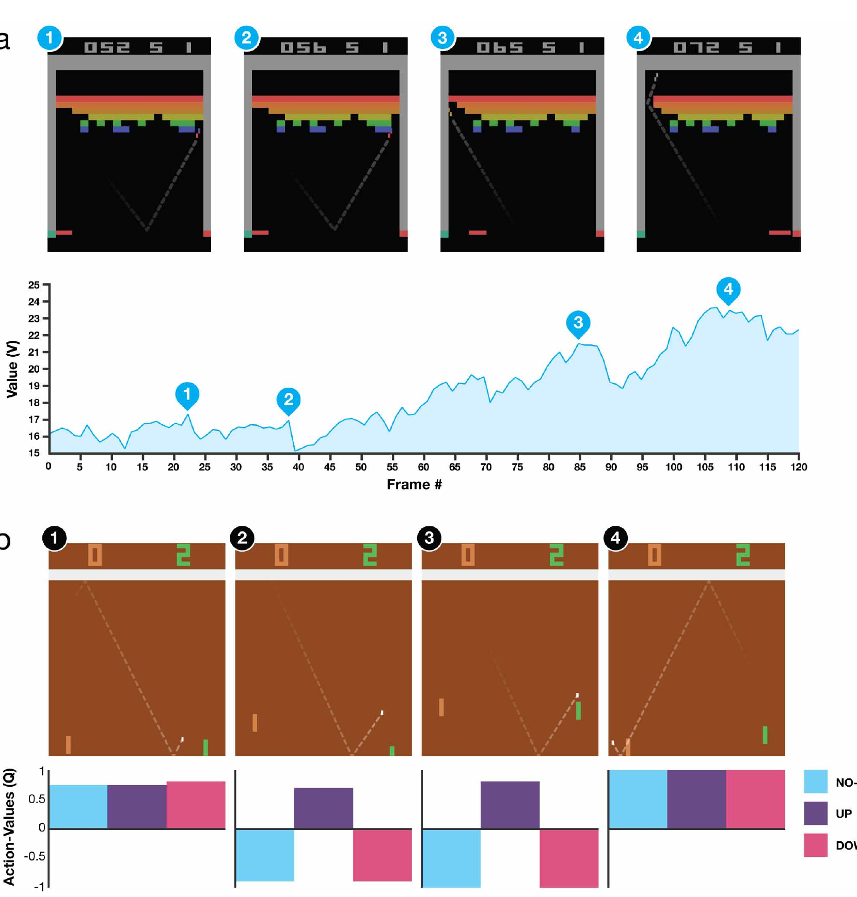
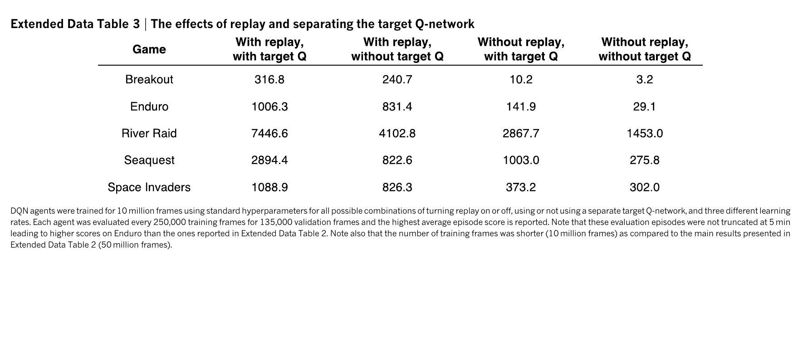
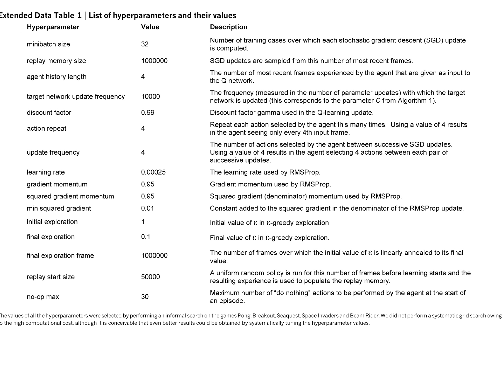
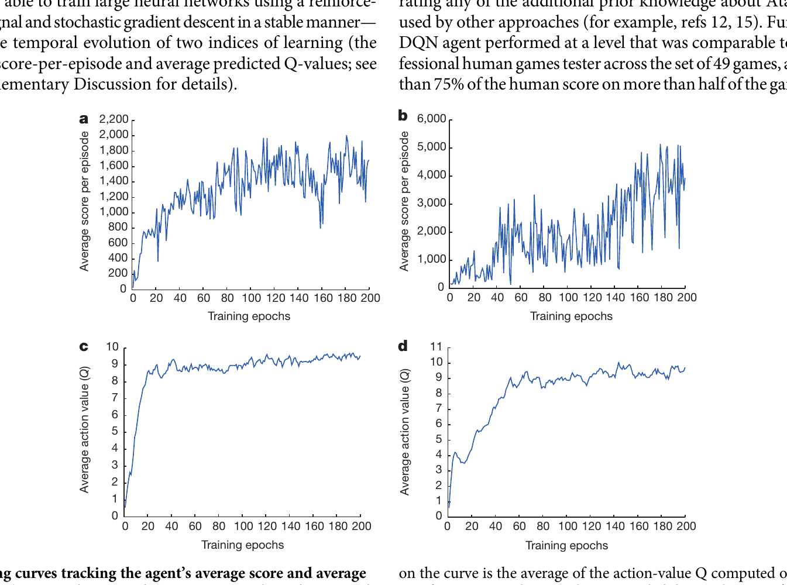
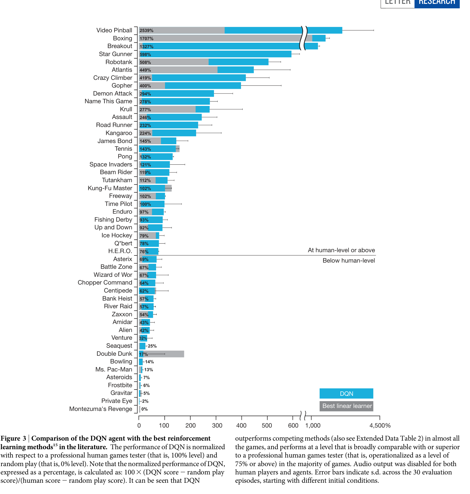
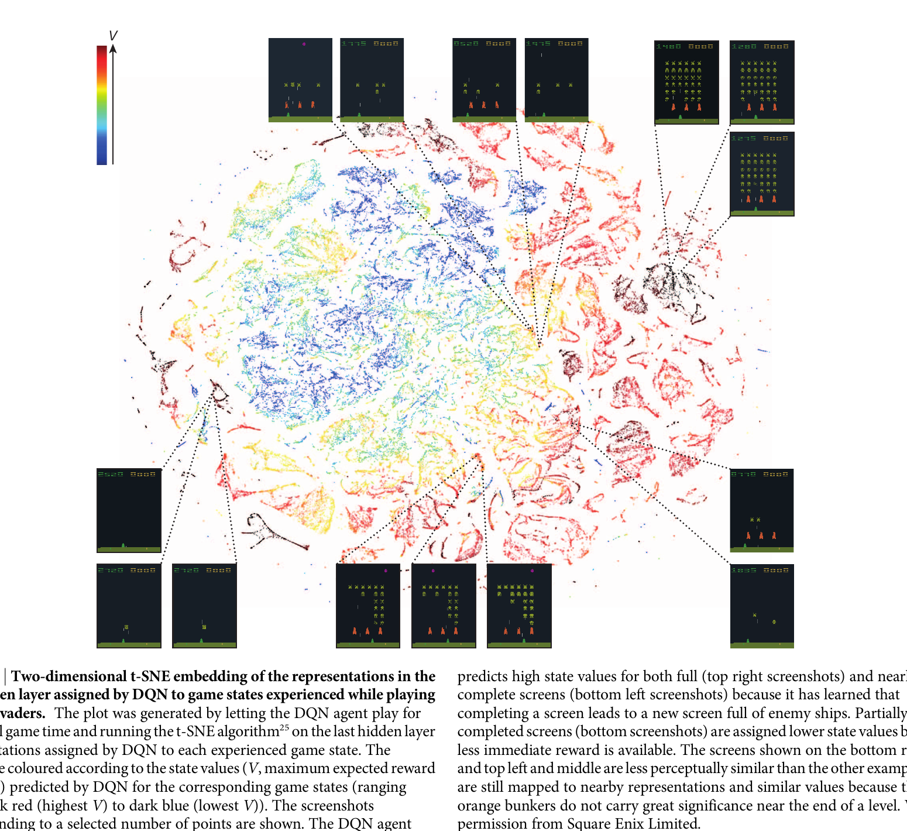

Finish Trace A at one illustrative weight
- From the table:
- Because ,
- Suppose the local sensitivity is . Then
- With learning rate , gradient descent gives This local change pushes Q(φ, right) upward.
Deep reinforcement learning · a one-hour paper lesson
DQN learned to choose Atari actions from pixels by forecasting their discounted future reward. Its central trick is not merely a convolutional network: it is learning from its own predictions without letting those predictions move too fast.
By the end, you should be able to trace one DQN update, distinguish replay from a target network, and explain why a high Q-value is not a probability.
Human-level control through deep reinforcement learning · Volodymyr Mnih et al. · Nature 518, 2015
Lesson diagram. The useful action can look unrewarding until its delayed consequence arrives.
The useful action looks empty at first, then pays +8 two steps later.
The route
1 · The problem and the unstable baseline
Atari control combines three hard problems: infer motion from pixels, assign credit to actions whose rewards arrive later, and keep learning even though each new policy changes which experiences come next. A naive baseline—online Q-learning with a deep network trained on consecutive frames and its own latest predictions—couples all three feedback loops.
Lesson diagram. This is the baseline failure chain DQN is designed to interrupt. Replay weakens the data-correlation link; a delayed target network weakens the moving-label link.
2 · The minimal RL kit
For this visual situation, which action has the largest expected future payoff?
γ, the discount, makes immediate feedback count more than equally distant feedback. In the paper’s experiments, γ = 0.99.
| Symbol | Shape in this paper | Role in one update |
|---|---|---|
φt | 4 × 84 × 84 processed frames | Network input; four frames expose short-term motion that one screen hides. |
Qθ(φt, ·) | |A| scalars; |A| ranges from 4 to 18 across games | One predicted return for every legal discrete action in a single forward pass. |
(φ, a, r, φ′) | One transition tuple | An item in replay memory. Only Qθ(φ, a) for the recorded action enters its loss. |
y, δ, L | One scalar each | Target, target-minus-prediction error, and loss contribution for that transition. |
Bridge forward: immediate reward, long-term return, and action value now have different jobs. The next question is where a numerical training label for Q(φ, a) can come from when no teacher knows the correct return.
3 · The Bellman insight
Unlike supervised learning, nobody hands DQN the correct value for a frame. It makes a provisional label by combining the reward it just saw with its estimate of the best thing possible next.
The right-hand side is a Bellman backup. The first part is real evidence. The second part is a bootstrap: the learner borrows from its next-state prediction. This makes learning possible from sparse rewards, and also makes the labels self-generated and unstable.
Move the discount and watch the future change today’s label.
For a terminal transition, there is no next state to bootstrap from: y = r. DQN must not hallucinate a future beyond the end of an episode.
Plain-language bridge: a Bellman target is an accountant’s estimate: a receipt already observed, plus a discounted forecast for what remains. That gives DQN a provisional answer sheet; next we need a network that can produce the current and next-state forecasts from pixels.
4 · Pixels to a decision
DQN does not predict “the best action” directly. Its network produces a small vector of Q-values, then the agent can choose the largest one - except when ε-greedy exploration deliberately tries a random legal action.
One frame says where the ball is. A short stack says which way it is moving.
Bridge forward: these outputs are expected future payoffs, not normalized confidence scores. The network supplies the forecasts; the Bellman rule turns one stored transition into a supervised-style update for the action actually taken.
5 · Two full updates, not just an equation
The target network answers a very particular question: from the next state, which action looks best according to a held snapshot? The online network is only evaluated at the action that was actually taken. That asymmetry is the heart of the update.
Read each trace in the same order: build target y from reward plus the frozen forecast; compare it with the live prediction; square the difference; then follow the loss gradient to see whether the selected Q-value rises or falls.
| Quantity | Given or computed value | Meaning |
|---|---|---|
| stored transition | (φ, right, +1, φ′) | One item sampled from replay. |
| Qθ⁻(φ′, ·) | The frozen target network's values for next actions. | |
| max Qθ⁻(φ′, a′) | 1.6 | Use the best next action value, not the value for the old action “right”. |
| y, γ = 0.9 | 1 + 0.9 × 1.6 = 2.44 | The bootstrapped training label for this non-terminal transition. |
| Qθ(φ, right) | 1.94 | The online network's present prediction for the chosen action. |
| δ = y − Qθ | +0.50 | The prediction is too low. Gradient descent should push this chosen action-value upward. |
| L = δ² | 0.25 | The squared-error contribution before the original implementation's error clipping becomes relevant. |
For with y treated as fixed, the gradient is
Here δ is positive, so a gradient-descent step increases Qθ(φ, right). It does not take derivatives through the target snapshot θ⁻.
The squared-error gradient would be zero for this sample: the live value already matches the frozen Bellman target. That does not prove the policy is optimal; it only means this sampled transition supplies no local correction.
Both traces use , so they stay in the squared-error region of the original implementation’s clipped-error rule. The illustrative values expose the chain rule; a real network applies the same logic across all contributing parameters.


6 · Interrupt the feedback loops
A deep Q-network faces a difficult combination: nearby game frames are strongly correlated, the policy changes the data it sees, and each Q-update changes future training labels. DQN’s two famous mechanisms do different jobs.
DU(D)θθ⁻Changes which experiences teach. Sampling old and new transitions together reduces temporal correlation and lets useful rare events be reused. It does not magically make data perfectly i.i.d. or guarantee coverage.
Changes how quickly labels move. The next-state value stays fixed for a while, so the learner is not chasing a new answer after every tiny update. It does not make the target correct or remove overestimation bias.
Why these mechanisms now: the traces assumed the target stayed meaningful long enough to learn from it. Replay mixes which experiences teach; the target network holds the answer sheet still for a while. They solve different parts of the unstable baseline from Section 1.
Step through one update, then decide when the frozen teacher copies the live student.
During a gradient update, DQN changes θ to reduce the TD error . The target network supplies y but is not differentiated through. The original implementation also clipped large error signals for stability.


7 · What the 2015 paper actually showed
The Nature paper trained a separate agent for each Atari 2600 game, using one broad architecture and setup. It was a landmark result, but not a single general-purpose agent and not a proof that deep RL will converge in arbitrary environments.
Bridge to evidence: we now have the whole causal mechanism—Bellman target, convolutional value estimator, replay, and delayed target network. Read the result as evidence for that training recipe on this Atari protocol, not as a general-intelligence claim.



One paper detail worth retaining: reward clipping to [−1, 1] made a common setup work across games with wildly different score scales. It improves practical stability, but in edge cases it can change which long-term policy is preferred.
8 · Debugging bench
“My target changes as fast as my prediction.” That is the unstable bootstrap loop. The DQN intervention is a periodically frozen target network. It slows down the teacher; it does not grant a correct answer.
“The last few frames all look nearly identical.” Training only on consecutive experience produces correlated updates and poor reuse of rare events. Replay samples across the stored tape; it cannot invent experience the agent never collected.
“The ball is here, but which way is it travelling?” A single image hides velocity. Four frames provide short-term motion evidence. This is still only a short history, not a universal cure for partial observability.
“TD loss fell, so the agent improved.” Not necessarily. TD loss is agreement with sampled, self-generated targets. Check actual episode returns and behaviour across states separately.
9 · Compare the learning signals
| Lesson | What the model outputs | Where the training signal comes from | Key distinction |
|---|---|---|---|
| ResNet | Features or class predictions | Usually labels with a fixed supervised loss | Residual connections help gradients travel through a deep architecture. A DQN target network stabilizes a changing label; do not treat them as the same technique. |
| Transformer | Token logits, then probabilities | Known next-token targets | DQN’s Q-values are expected future reward, not probabilities. Its targets are partly made from a delayed copy of its own predictions. |
| GAN | Generated samples and a discriminator score | A learned adversary's changing judgement | Both systems learn from a target that is not a fixed dataset label. GAN training co-evolves two players; DQN deliberately slows its bootstrap teacher with a target snapshot. |
| DQN | One value per discrete action | Reward plus bootstrapped next-state value | The model must act to create future data, then learn from the consequences. That feedback loop is the central new difficulty. |
10 · Close the loop
6.5. The backup is 2 + 0.9 × 5. This assumes the transition is not terminal.
y = r. There is no next state and therefore no future Q-value to bootstrap from.
For a discrete action set it can efficiently compare actions with argmaxa Q(φ, a), rather than running a separate forward pass per action.
Replay reduces sequential correlation and reuses varied experience. The target network instead slows the motion of bootstrap labels.
A single screen often hides motion direction and velocity. A short stack supplies temporal evidence, though it is not a complete memory.
It measures agreement with sampled, self-generated targets, not comprehensive game performance or coverage of important states. Evaluate episodes too.
11 · Carry this forward
ResNet, the Transformer, and DQN are a useful trio because each protects a valuable signal while learning a correction. They are not the same mechanism, but they cultivate the same habit: preserve a dependable baseline, then make the learned change explicit.
A deep layer can revise an existing representation through x + F(x). The shortcut is the baseline path; the learned branch only needs to add a useful correction. Visual feature maps can survive many layers because doing nothing is easy.
Attention and feed-forward sublayers sit inside residual pathways around the token representation. The baseline token stream survives; attention can mix information across tokens and the feed-forward block can refine each token without having to rebuild the whole representation from scratch.
The generator learns from a discriminator whose judgement changes as the generator changes. That is another moving-target learning problem, but the two networks intentionally co-evolve. DQN instead holds its target snapshot still for many updates so a value learner can make a controlled correction.
The preserved baseline is not an identity activation. It is a forecast: immediate reward plus a delayed estimate of future value. The live Q-network learns a correction toward that Bellman target, while replay and the frozen target network stop the teaching signal from changing too chaotically.
Question to hold onto: when you meet a new deep architecture, ask what baseline signal is being carried forward, what learned branch is allowed to change it, and what keeps the information or training target stable while many updates accumulate.
12 · Takeaway
Pixels enter; one expected return leaves for each discrete action. A stored transition supplies the receipt, the frozen target network supplies the cautious forecast, and their Bellman sum becomes a temporary label for the live network.
Native intuition: replay changes which memories teach, while the target network changes how quickly the answer sheet moves. DQN worked because it separated those two instability problems instead of treating “deep learning” as the entire solution.